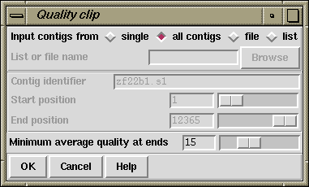

The quality clipping function (which is available from the gap4 Edit menu) clips the ends of readings when the average (over 31 bases) confidence value is lower than a user defined threshold. As with the difference clipping method the clips are only adjusted when the newly calculated clip points are more stringent than the originals.
After clipping Gap4 then identifies any holes (breaks in the contigs) that may have been created and fills them up again by extending the sequence(s) with the fewest number of expected errors.
An example output follows.
Hole from 32652 to 32725: extend #1378 and #1385 with 3.157324 expected errors
We have observed that when using confidence values expressed as -10*log(err_rate), it is sometimes better not to clip using the confidence values, but to use the difference clipping method (see section Difference Clipping).